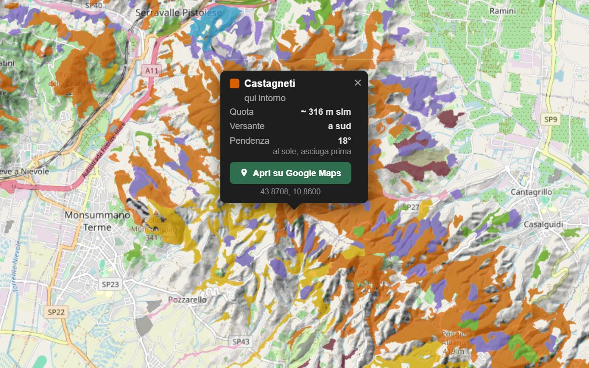

‹ Mappa forestale d'Italia › Toscana › Valdinievole
Mappa forestale della Valdinievole: che bosco c'è
La carta forestale della Valdinievole, colorata sopra il rilievo. Tocchi un punto e sai che bosco è, a che quota e su quale versante. Per chi va a funghi, a castagne, a vedere il foliage o a camminare.
🌲 Apri la mappa forestale della Valdinievole
Valdinievole, intorno ad Albano: castagneti in arancio, conifere non precisate in viola, querceti in ocra. Apri la mappa per vedere il resto della zona.
🌲 Trova i boschi in Valdinievole e dintorni
Scrivi il paese: si apre la mappa dei boschi su quel posto, faggete, castagneti, querceti e abetaie colorati per tipo, col satellite a un tocco.
Che boschi ci sono in Valdinievole
Il bosco copre l'82% del territorio intorno ai pluviometri della zona. Ecco come si divide.
Che tempo farà in Valdinievole
Sto leggendo le previsioni dei paesi…
I paesi intorno alla valle
Che bosco c'è entro 3 km da ogni paese, dal più basso al più alto. Il nome porta alla sua pagina con la pioggia per i funghi.
- 385 m
- 465 m
- 560 m
- 790 m
- 960 m
A chi serve
- 🍄Funghi
Porcini e compagni stanno sotto castagni, faggi, querce e abeti: qui sono l'85% del bosco. E con la pioggia degli ultimi giorni sai anche se è il momento: funghi in Valdinievole oggi. - 🌰Castagne
I castagneti sono l'82,2% del bosco. Prima di raccogliere assicurati che il bosco sia libero: molti castagneti sono proprietà private. - 🥾Escursioni e sentieri
Prima di partire guardi che bosco attraversa il sentiero, a che quota e su quale versante: tocchi un punto sulla mappa e lo apri su Google Maps.
Da dove viene la carta
Licenza CC BY 4.0 · scheda ufficiale
Le altre zone della Toscana
‹ Mappa forestale della Toscana
E la pioggia? Sulla stessa mappa
La mappa forestale sta dentro la nostra mappa pluviometrica: 5 pluviometri intorno alla zona, con la pioggia vera giorno per giorno. Con ⇆ Confronta con piogge metti accanto boschi e pioggia.
💧 Apri la mappa della pioggia: ultimi 20 giorni
Dove ha piovuto in Valdinievole · Funghi in Valdinievole oggi